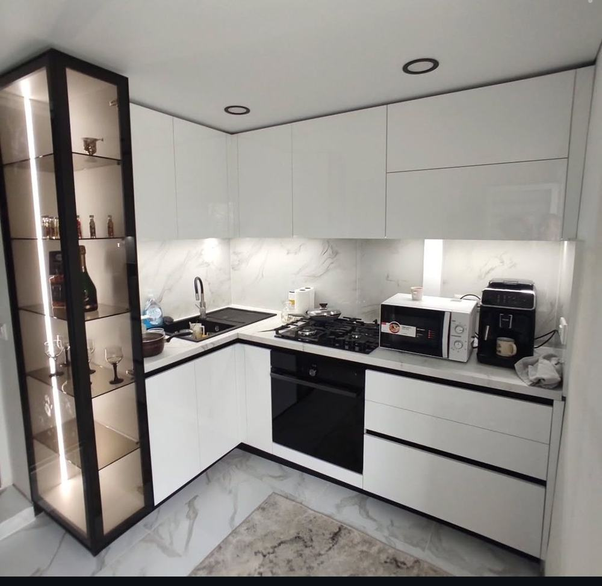

Bucătării
Un spațiu practic și primitor, cu zone de lucru bine gândite și depozitare adaptată.
Creăm mobilier la comandă, adaptat felului în care trăiești. De la prima idee și măsurare până la montajul final.
↓
Fiecare locuință are propriul ritm. De aceea, mobilierul trebuie să se potrivească nu doar dimensiunilor, ci și oamenilor care îl folosesc.
La Vilmora, lucrăm la comandă: discutăm ideea ta, măsurăm spațiul, pregătim proiectul și asamblăm mobilierul cu atenție la fiecare detaliu.
AFLĂ CUM LUCRĂM ↗Câteva dintre proiectele realizate. Fiecare spațiu are propria poveste — iar mobilierul îi dă formă.
Mobilier proiectat în jurul spațiului tău, al preferințelor tale și al lucrurilor care contează în fiecare zi.
Un spațiu practic și primitor, cu zone de lucru bine gândite și depozitare adaptată.
De la dulapuri încorporate până la soluții cu rafturi și compartimente create pentru lucrurile tale.
Comode, panouri decorative, lamele și iluminare — un ansamblu unitar pentru living.
Materialele și finisajele se aleg în funcție de proiect și de preferințele clientului.
MOBILIERUL TREBUIE SĂ SE ADAPTEZE ȚIE.
HAI SĂ ÎNCEPEM ↗Un proces simplu, în care știi ce urmează și poți lua deciziile împreună cu noi.
Ne povestești ce îți dorești, ce funcționalități sunt importante și ce stil preferi.
Venim la fața locului pentru a măsura spațiul și a înțelege toate particularitățile lui.
Pregătim o propunere adaptată dimensiunilor și discutăm detaliile înainte de realizare.
Stabilim împreună etapele și termenul estimativ pentru proiectul tău.
Pregătim și asamblăm mobilierul în atelier, cu atenție la îmbinări și finisaje.
Instalăm mobilierul și verificăm împreună detaliile finale.
Nu. Poți veni cu propriul model sau cu o idee, iar noi putem propune variante potrivite spațiului și preferințelor tale.
Da. Măsurarea la fața locului face parte din procesul de pregătire a proiectului.
Activăm în Ungheni și în raionul Ungheni. Scrie-ne pentru a discuta detaliile proiectului tău.
În funcție de proiect, folosim PAL melaminat și fronturi din MDF sau AGT. Variantele se aleg împreună cu clientul.
Termenul depinde de dimensiunea și complexitatea proiectului. Îl discutăm și îl stabilim înainte de începerea lucrării.
Spune-ne ce ai în minte. Discutăm ideea, spațiul și pașii următori.
SCRIE-NE PE WHATSAPP↗